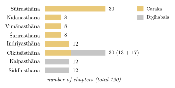

Chapter 3: The Caraka Saṃhitā¶
dharmārthakāmamokṣāṇām ārogyaṃ mūlam uttamam
rogās tasyāpahartāraḥ śreyaso jīvitasya ca
Health is the supreme root of virtue, wealth, pleasure and liberation.
Diseases destroy it, and destroy well-being and life itself.
— Caraka Saṃhitā, Sūtrasthāna 1.15–16
3.1 The Work and Its Authors¶
The Caraka Saṃhitā is the oldest and most comprehensive surviving work of Indian general medicine (kāyacikitsā). It is also a work of considerable philosophical range, with discussions of the self, rebirth, causation, the means of knowledge and the rules of debate. For two thousand years it has been the foundation of Āyurvedic learning, and it remains the first text studied in Āyurvedic colleges.
The work describes its own history. Its teaching is presented as that of Punarvasu Ātreya, set down by his pupil Agniveśa; the text was “redacted” (pratisaṃskṛta) by Caraka; and, since a third of it had been lost, it was completed by Dṛḍhabala, son of Kapilabala, of the town of Pañcanada. Dṛḍhabala says that he supplied seventeen chapters of the Cikitsāsthāna and the whole of the Kalpasthāna and Siddhisthāna—41 chapters in all. Which seventeen therapeutic chapters are his is disputed, because the manuscripts order the Cikitsāsthāna in two different ways.
The dates of these figures are uncertain. Agniveśa’s original work, if it existed as a single book, cannot be dated. Meulenbeld’s careful review of the evidence places Caraka’s redaction somewhere between about 100 BCE and 200 CE, and Dṛḍhabala in the fourth or fifth century CE (Meulenbeld 1999–2002). A Buddhist story, preserved in a Chinese translation of the late fifth century, makes a physician named Caraka the doctor of the Kuṣāṇa king Kaniṣka; whether this is the same person is unknown. The text as we have it is thus a layered work, and even within Caraka’s own portion there are passages of different date and style.
The arguments behind this wide range show how such dates are reached (Section 1.7). The upper limit comes from later witnesses. The Bower Manuscript of the late fifth or sixth century cites Ātreya and his pupils as authorities (Section 1.7.1), and Vāgbhaṭa, about 600, draws on Caraka’s text, including the parts supplied by Dṛḍhabala, throughout. The lower limit, and Caraka’s place within the range, rest on the work’s intellectual setting. Its list of the terms of debate (Ca.Vi. 8) overlaps with the Nyāyasūtra but is less systematic, and many scholars take it to be the older of the two; the Sāṃkhya of its Śārīrasthāna lacks the separate conscious principle of the Sāṃkhyakārikā and looks like an earlier form of the school; and the Vaiśeṣika categories are already known to it. None of these comparisons yields a firm date, because the philosophical texts are themselves hard to date. Two traditional identifications point in different directions. The Buddhist story of Caraka as physician to Kaniṣka would place him in the Kuṣāṇa period, about the second century CE, if it refers to the same man. A verse at the opening of Cakrapāṇidatta’s commentary praises the serpent-lord who removed the faults of mind, speech and body through the Yoga, the Mahābhāṣya and the redaction of Caraka—that is, it makes the grammarian Patañjali (2nd century BCE) the redactor of the medical text as well—but this identification is late, and most historians reject it. Meulenbeld weighs these and other arguments and finds none of them decisive, which is why his range is so wide (Meulenbeld 1999–2002).
The standard Sanskrit edition is that of Jādavjī Trikamjī Ācārya, with the commentary of Cakrapāṇidatta (Trikamji Acharya 1941). Complete English translations include that of Priyavrat Sharma (Sharma 1981–1994); Wujastyk’s Roots of Āyurveda gives an accurate translation of selected chapters with an excellent introduction (Wujastyk 2003), and M. S. Valiathan’s The Legacy of Caraka retells the work section by section for the modern reader (Valiathan 2003).
3.2 The Structure of the Work¶
The Caraka Saṃhitā has 120 chapters in eight sections (sthāna), listed in Table 3.1 and compared by size in Figure 3.1.
| Section | Chapters | Subject |
|---|---|---|
| Sūtrasthāna | 30 | General principles: drugs, regimen, diet, the physician, the classification of disease |
| Nidānasthāna | 8 | Causes and signs of eight major diseases |
| Vimānasthāna | 8 | “Specific measures”: tastes and diet, epidemics, channels, methods of examination, the training of physicians and the rules of debate |
| Śārīrasthāna | 8 | The person and the self; embryology; the body; pregnancy and childbirth |
| Indriyasthāna | 12 | Signs of approaching death |
| Cikitsāsthāna | 30 | Therapeutics: rejuvenation, virility, and the treatment of particular diseases |
| Kalpasthāna | 12 | Pharmaceutics of emetic and purgative drugs |
| Siddhisthāna | 12 | The successful administration of the purification therapies, especially enemas |
| Total | 120 |

3.3 The Sūtrasthāna¶
The thirty chapters of the Sūtrasthāna (Table 3.2) are arranged in seven groups of four (catuṣka) and a concluding pair, and the arrangement is itself an argument about what a physician must know and in what order. Chapters in works of this kind are usually named after their opening words or their main subject.
| Ch. | Title | Main subject |
|---|---|---|
| 1 | Dīrghañjīvitīya | origin and definition of Āyurveda; categories; classes of drugs |
| 2 | Apāmārgataṇḍulīya | drugs for purification of the head and body; gruels |
| 3 | Āragvadhīya | external applications for skin diseases |
| 4 | Ṣaḍvirecanaśatāśritīya | purgative drugs; the fifty great groups |
| 5 | Mātrāśitīya | measure of food; daily regimen |
| 6 | Tasyāśitīya | seasonal regimen |
| 7 | Navegāndhāraṇīya | urges; exercise; habituation |
| 8 | Indriyopakramaṇīya | the senses and the mind; good conduct |
| 9 | Khuḍḍākacatuṣpāda | the four feet of treatment |
| 10 | Mahācatuṣpāda | curability and incurability |
| 11 | Tisraiṣaṇīya | the three desires; means of knowledge; three kinds of therapy |
| 12 | Vātakalākalīya | debate on the properties of vāta, pitta and kapha |
| 13 | Sneha | oleation |
| 14 | Sveda | sudation |
| 15 | Upakalpanīya | preparations and equipment for purification |
| 16 | Cikitsāprābhṛtīya | the skilled physician; effects of proper and improper purification |
| 17 | Kiyantaḥśirasīya | diseases of head and heart; combinations of doṣas |
| 18 | Triśothīya | swellings |
| 19 | Aṣṭodarīya | enumeration of diseases |
| 20 | Mahāroga | diseases caused by single doṣas |
| 21 | Aṣṭauninditīya | the eight censured physiques; obesity, emaciation; sleep |
| 22 | Laṅghanabṛṃhaṇīya | lightening and nourishing therapies |
| 23 | Santarpaṇīya | disorders of over- and under-nutrition |
| 24 | Vidhiśoṇitīya | pure and vitiated blood; fainting and intoxication |
| 25 | Yajjaḥpuruṣīya | the origin of the person; the foremost things |
| 26 | Ātreyabhadrakāpyīya | tastes; incompatible foods |
| 27 | Annapānavidhi | the properties of foods and drinks |
| 28 | Vividhāśitapītīya | digestion and nourishment; diseases of the constituents |
| 29 | Daśaprāṇāyatanīya | the ten seats of life; true and false physicians |
| 30 | Arthedaśamahāmūlīya | the heart and the ten great vessels; the purpose of Āyurveda |
The first group (chapters 1–4) is on drugs. After the story of the transmission and the definition of the science (Chapter 1), Caraka sets out the six categories, classifies drugs by origin and by the part used, and lists those most needed for purification—among them four “great fats” (ghee, oil, muscle fat and marrow), five salts, eight kinds of urine and eight of milk. Twenty-eight medicated gruels follow, a reminder that much classical therapy was given in the form of food, and the group ends with the fifty “great groups” (mahākaṣāya) of ten drugs each, defined by their action (Chapter 6). Only then, in the second group (5–8), does Caraka turn to the healthy person: the measure of food, which “depends on the strength of the digestive fire” (mātrāśī syāt; āhāramātrā punar agnibalāpekṣiṇī, Ca.Sū. 5.3), the daily and seasonal regimen, the senses and good conduct (Chapter 2). Chapter 7 lists the thirteen natural urges whose suppression causes disease—urination, defecation, ejaculation, flatus, vomiting, sneezing, belching, yawning, hunger, thirst, tears, sleep, and heavy breathing after exertion—and, against them, the impulses that should be restrained: rash action, greed, grief, fear, anger, vanity, shamelessness, envy, excessive passion and covetousness. Health is framed from the start as a matter of what one does.
The third group (9–12) asks what medicine is and whether it works. Chapter 9 sets out the four “feet” of treatment—physician, drugs, attendant and patient, each with four qualities. Chapter 10 opens with one of the most remarkable passages in the work. A sage named Maitreya argues that medicine is useless, since some patients who are treated die and some who are not treated recover. Ātreya answers that diseases differ: some are easily curable, some curable with difficulty, some only controllable and some incurable, and failure in the last kinds, or through defective treatment, does not show that treatment is useless (Section 10.4). The compendia were thus aware of the most basic problem in judging a treatment—that patients may recover without it—even if they lacked the means to solve it. Chapter 11, on the three desires for life, wealth and the other world, defends rebirth against sceptics with Caraka’s four means of knowledge, sets out the three kinds of therapy and the three supports of life (Section 1.3), and distinguishes impostors and hangers-on from true physicians, the “givers of life” (Ca.Sū. 11.50–53); the concern with impostors reflects a world without formal qualifications, in which a patient’s only protection was the physician’s reputation. Chapter 12 is cast as a debate among sages on the properties of vāta, and Chapter 25 later as another, on the origin of the person: the self, the mind, the tastes, the elements, the parents, past action, inherent nature, the creator and time are each proposed, and Ātreya concludes that the person, like disease, arises from wholesome and unwholesome food. In these chapters doctrine is presented as the outcome of argument, with rival views heard before the teacher gives his own.
The fourth group (13–16) turns to the preparatory therapies of oleation and sudation and to the conduct of purification (Chapter 7). Its chapter on “preparations” (Upakalpanīya, Ca.Sū. 15) describes what a physician needs before purifying a king or a wealthy patient: a house built by an expert architect, sheltered from wind, smoke, dust and unpleasant sights and sounds and supplied with water, a mortar and pestle, a privy, a bathing place and a kitchen; attendants of good conduct skilled in cooking, bathing, massage, lifting and nursing the patient and preparing medicines; singers, musicians, panegyrists and storytellers to keep the patient cheerful; milch animals; and a store of grains, oils, salts, fruits, drugs and instruments. This “house of treatment” is the closest thing in the compendia to a description of an inpatient facility, though it is designed for a single wealthy household rather than a public hospital.
The fifth group (17–20) surveys diseases: those of the head and heart, the possible combinations of the doṣas, swellings, the enumeration of diseases by their numbers, and finally the disorders caused by a single doṣa alone (nānātmaja), of which Caraka counts eighty of vāta, forty of pitta and twenty of kapha (Ca.Sū. 20). The sixth (21–24) is on the planning of treatment. It opens with the eight “censured” physiques—the excessively tall, short, hairy, hairless, dark, fair, fat and thin—and a long analysis of obesity, in which fat blocks the channels so that the other constituents are starved while the trapped digestive fire produces constant hunger; the same chapter discusses sleep (Section 2.11). Chapter 22 then reduces all therapy to six actions (ṣaḍupakrama)—lightening, nourishing, drying, oleating, sweating and checking—each defined by the qualities of the substances used; Chapter 23 sets the diseases of over-nutrition against those of under-nutrition and treats each by its opposite; and Chapter 24 deals with pure and vitiated blood, bloodletting, and the graded states of intoxication, fainting and coma.
The seventh group (25–28) is on food and drink. Chapter 26 gives the theory of the six tastes (Table 3.3), with the calculation that they can be combined in sixty-three ways, and the eighteen kinds of “incompatibility” (viruddha) in food, of which fish with milk, and honey with an equal quantity of ghee, are the best-known examples. Chapter 27 describes the properties of foods and drinks in twelve groups (Section 6.5), and Chapter 28 relates nourishment to the diseases of the bodily constituents. The concluding pair (29–30) returns to the physician: the ten seats of life; the true physician, “a saviour of life” (prāṇābhisara), against the quack who poses as one to make money (rogābhisara); the heart and ojas; the purpose of the science, which is declared eternal because the nature of things is eternal (Ca.Sū. 30.27); and the instruction to declare allegiance to the Atharvaveda if asked.
Read as a whole, the Sūtrasthāna moves from substances to the healthy person, from the physician’s means of knowledge to procedures and diseases, and back through food to the physician. It is less a summary of the rest of the work than a training of judgement: almost every later chapter applies a rule first stated here.
| Taste | Predominant elements | Decreases | Increases | Examples |
|---|---|---|---|---|
| madhura (sweet) | water (earth) | vāta, pitta | kapha | ghee, milk, sugar, rice |
| amla (sour) | earth, fire | vāta | pitta, kapha | sour fruits, curd |
| lavaṇa (salt) | water, fire | vāta | pitta, kapha | rock salt |
| kaṭu (pungent) | air, fire | kapha | vāta, pitta | pepper, ginger |
| tikta (bitter) | air, space | pitta, kapha | vāta | neem, turmeric |
| kaṣāya (astringent) | air, earth | pitta, kapha | vāta | myrobalan |
3.4 The Nidānasthāna¶
The eight chapters on causes (Table 3.5) deal with fever (jvara), bleeding disorders (raktapitta), abdominal swellings (gulma), urinary disorders (prameha), skin diseases (kuṣṭha), wasting (śoṣa), insanity (unmāda) and epilepsy (apasmāra). The first chapter sets out the five means of knowing a disease (nidānapañcaka, Ca.Ni. 1.6): its cause (nidāna); its premonitory signs (pūrvarūpa); its manifest signs (liṅga or rūpa); what relieves or aggravates it, used as a diagnostic test (upaśaya); and the course of its development (saṃprāpti).
Fever is treated first, both here and in the Cikitsāsthāna, as the “king” of diseases: the first to arise, accompanying birth and death. Caraka recognises fevers caused by each doṣa, by pairs and by all three together, and fevers due to external causes, including injury, poison and emotion.
Raktapitta, “blood-bile”, is a bleeding disorder in which blood vitiated by pitta escapes through the upper orifices (mouth, nose, eyes, ears), the lower (anus, urethra, vagina) or both. Caraka judges the upward form curable, the downward form only controllable, and bleeding in both directions incurable. Gulma is a hard, often mobile swelling in the abdomen, of five kinds—one for each doṣa, one for all three, and one “of blood” that occurs only in women and must be distinguished from pregnancy. Śoṣa, “drying up”, is the wasting disease treated in the Cikitsāsthāna as rājayakṣman (below).
Caraka’s account of prameha distinguishes twenty kinds by the appearance of the urine: ten caused by kapha, six by pitta and four by vāta. Among the last is madhumeha, in which the urine is “like honey”. The texts associate prameha with overeating, heavy and sweet food, curd, idleness and sleeping by day, and they recognise an inherited form. The account is a striking clinical description; it is not, however, a description of diabetes mellitus in the modern sense, since the category includes other conditions in which the urine is abnormal.
The last chapter of the section, on epilepsy, adds a general discussion of how diseases interact. One disease may be the cause of another: fever and bleeding disorders may lead to wasting, for example, and enlargement of the spleen to abdominal swelling. A disease may also be the cause of another while itself disappearing, or may persist alongside it. The physician must therefore understand the whole history of an illness, not only its present signs.
3.5 The Vimānasthāna¶
The “section on specific measures” is the most intellectually varied part of the work.
3.5.1 Diet (Ca.Vi. 1–2)¶
The first chapter lists eight factors that determine the effect of food (āhāravidhiviśeṣaāyatana; Table 3.4).
| Factor | Meaning |
|---|---|
| prakṛti | the natural qualities of the food |
| karaṇa | its preparation (washing, heating, churning, storing and so on) |
| saṃyoga | combination with other foods |
| rāśi | quantity, of the whole meal and of each item |
| deśa | place, both where the food grows and where it is eaten |
| kāla | time of day, season and the state of the eater |
| upayogasaṃsthā | the rules of eating |
| upayoktṛ | the eater, whose habituation determines what suits him |
The second chapter teaches that the stomach should be thought of in three parts: one to be filled with solid food, one with liquid, and one left for the doṣas.
3.5.2 Epidemics (Ca.Vi. 3)¶
The third chapter, “On the destruction of communities” (Janapadoddhvaṃsanīya), asks how a single disease can strike many people of different constitutions at once. The answer is that some factors are common to all the inhabitants of a region: air, water, land and season. When these are vitiated—the wind unseasonable or foul, water discoloured or stinking, the land infested and its plants withered, the seasons out of order—whole populations fall ill. The root of such vitiation, Caraka says, is unrighteousness (adharma), above all of rulers, which corrupts the natural order; war and curses are named as further causes. As remedies he recommends rejuvenating drugs collected before the land is spoiled, the purification therapies, and truthfulness, compassion, charity, worship and the company of the good.
The chapter is notable for treating disease as a matter of shared environment as well as individual constitution, and for linking public health to just government. It is not a theory of contagion, and its causal account is moral as much as natural. The same chapter contains a debate on whether the span of life is fixed by past actions or can be changed by present effort; Ātreya concludes that both play a part, and that the physician’s work therefore matters.
3.5.3 Diseases, Channels and Patients (Ca.Vi. 4–7)¶
The middle chapters of the Vimānasthāna deal with method. Chapter 4 explains the three means of knowing a disease—instruction, perception and inference—and how each applies. Chapter 5, on the channels, has been summarised in Chapter 2. Chapter 6, “On the hosts of diseases” (Rogānīka), shows that diseases can be classified in many ways: as curable or incurable, mild or severe, mental or bodily, endogenous or exogenous, arising in the stomach or the colon, and so on, and that the number of diseases is in principle unlimited, since they can be named and classified without end. The lesson is that the physician should not be troubled if he cannot name a disease, provided he understands its doṣas, site and causes.
Chapter 7 (Vyādhitarūpīya) warns against judging by appearances: some patients look gravely ill but have only a mild disease, while others look well but are seriously ill. It also describes twenty kinds of “worms” (krimi), external and internal—those of the skin and hair, and those arising from blood, phlegm and faeces—and their treatment by extraction, measures against their source, and the avoidance of their causes. The account includes what are clearly lice and intestinal worms, alongside other, more speculative “worms” supposed to cause disease.
3.5.4 The Training of Physicians and the Rules of Debate (Ca.Vi. 8)¶
The last chapter of the Vimānasthāna is a manual of medical education. It describes how to choose a text, a teacher and a student; the three means of learning—study, teaching and discussion with other experts; the initiation of the student and the teacher’s address to him (Chapter 1); and the conduct of discussions. Discussion (sambhāṣā) may be friendly, between colleagues seeking the truth, or hostile, against an opponent to be defeated; Caraka gives practical advice on when to engage in each, and on how to win. He then defines forty-four technical terms of debate (vādamārgapada): thesis, counter-thesis, reason, example, application, conclusion, fallacies, quibbles, points of defeat and the like. This list is one of the oldest surviving treatments of the subject in Sanskrit and overlaps substantially with the early Nyāya tradition.
The chapter ends with the tenfold examination of the patient (Chapter 10) and the examination of drugs.
3.6 The Śārīrasthāna¶
The section on the body begins with a long philosophical chapter on the nature of the person (Katidhāpuruṣīya, Ca.Śā. 1), discussing the self, the mind, the elements, the evolution of the world in a form related to Sāṃkhya, action and rebirth, suffering and liberation. Chapters 2–4 and 8 deal with conception, the development of the embryo, pregnancy and birth; chapters 5–7 with the correspondence of person and world, the constituents of the body, and the enumeration of its parts—Caraka counts 360 bones, including teeth and nails.
| Nidānasthāna | Vimānasthāna | Śārīrasthāna | |
|---|---|---|---|
| 1 | fever (jvara) | tastes (rasa) | “how many kinds of person” (katidhāpuruṣīya) |
| 2 | bleeding disorders (raktapitta) | the three parts of the stomach | “of unequal lineage” (atulyagotrīya) |
| 3 | abdominal swellings (gulma) | destruction of communities | the descent of the embryo (short) |
| 4 | urinary disorders (prameha) | the three means of knowing disease | the descent of the embryo (long) |
| 5 | skin diseases (kuṣṭha) | the channels (srotas) | examination of the person |
| 6 | wasting (śoṣa) | the hosts of diseases | examination of the body |
| 7 | insanity (unmāda) | the forms of the sick | enumeration of the body’s parts |
| 8 | epilepsy (apasmāra) | disease, physician and treatment | “the thread of birth” (jātisūtrīya) |
3.6.1 Conception and Heredity¶
The second chapter of the Śārīrasthāna, “Of unequal lineage”, begins by asking why a couple may fail to conceive, and why children differ from their parents. Its title refers to the rule that a man should marry a woman of a different gotra (clan lineage). Caraka discusses defects of semen and uterine blood, the conditions under which conception occurs, the causes of twins and of children of indeterminate sex, and the influence of the parents’ diet and conduct and of the child’s own past actions. Chapter 6, “Examination of the body”, discusses the factors that promote the growth of the body—a good season, good soil, the parents’ health, suitable food, and the absence of injury—and the causes of its decline. (Elsewhere, in the Sūtrasthāna, Caraka states the doctrine that things come into being through causes but perish of their own nature, without a cause of destruction (svabhāvoparama); the physician’s task is therefore to supply the causes of balance, not to destroy imbalance directly.)
3.6.2 The Person, Rebirth and Liberation¶
The first chapter of the Śārīrasthāna is one of the most important philosophical texts in Sanskrit outside the works of the philosophical schools. It describes the person as composed of twenty-four principles: the unmanifest (avyakta), the intellect, the ego and the five elements, which are the eight “evolvents” (prakṛti); and the sixteen “evolutes” (vikāra)—the ten faculties of sense and action, the mind, and the five sense objects. Unlike classical Sāṃkhya, Caraka does not set a separate conscious spirit over against these principles; consciousness belongs to the unmanifest. Historians of philosophy regard this as evidence of an early stage of Sāṃkhya thought, before the school’s doctrines were fixed in the Sāṃkhyakārikā (Wujastyk 2003).
The chapter goes on to discuss action and its fruit, rebirth, the causes of suffering, and liberation. Suffering arises from the conjunction of the self with the body and senses, driven by desire; it ends when desire is eliminated through knowledge, detachment and yogic discipline. Caraka describes the eight powers of the accomplished yogin and the path to final release, in which the self is freed from all connection with the body. A medical work thus ends its account of the person not with health but with liberation from embodiment altogether.
3.6.3 Embryology¶
The embryo, according to Caraka (Ca.Śā. 3), is formed from six factors: what derives from the mother (soft parts such as skin, blood, flesh, heart and liver), from the father (hard and fixed parts such as hair, nails, teeth, bones and semen), from the self, from habituation, from the nutrient fluid, and from the mind. The fourth chapter describes the development of the embryo month by month, from a jelly-like mass in the first month to a firm body with differentiated limbs, and the appearance of the “longings” of pregnancy (dauhṛda) in the fourth month, when the foetus’s heart is formed and its desires are expressed through the mother. The account combines careful observation of miscarried foetuses with theory and ritual belief.
3.6.4 Pregnancy and Birth (Ca.Śā. 8)¶
The last chapter of the section, “On the thread of birth” (Jātisūtrīya), prescribes rites and conduct for conception, the care of the pregnant woman, preparation of a lying-in house, management of delivery and the care of the newborn and the mother (Chapter 8). It includes a rite to obtain a male child (puṃsavana) and rules intended to influence the sex and character of the child.
3.7 The Indriyasthāna¶
The twelve chapters on the “senses” are devoted to prognosis, and specifically to the signs (ariṣṭa) that death is near. They are drawn from changes in complexion, voice, smell, taste and touch; from the patient’s shadow and reflection; from dreams; from the behaviour of the messenger who comes to call the physician; and from omens on the way to the patient’s house. Some examples give the flavour of the section. A patient whose reflection in a mirror or in water appears deformed, headless or without its natural colour is near death; so is one who sees the sun at night or the moon by day, who no longer perceives smells, or whose body gives off the smell of flowers without cause. Dreams are ominous when the sleeper sees himself riding a donkey or a camel towards the south, being dragged by a dark woman, or eating and drinking with the dead (Ca.In. 5). The physician’s messenger is also examined: if he arrives dirty, weeping, carrying a weapon or at an inauspicious time, the patient will not recover; and omens on the way to the patient’s house—a sneeze, a crow’s call, a broken pot—are interpreted in the same way (Ca.In. 12).
The purpose was practical: a physician who undertook a hopeless case would bring discredit on himself. The texts advise him, when he perceives such signs, not to announce death but to withdraw tactfully. Much of this material belongs to the world of omens rather than of clinical observation.
3.8 The Cikitsāsthāna¶
The Cikitsāsthāna, the largest section, opens with two chapters on rejuvenation (rasāyana) and virility (vājīkaraṇa), which are described with the rest of these branches in Sections 8.7 and 8.8, and continues with the treatment of particular diseases (Table 3.6).
| Ch. | Subject | Ch. | Subject |
|---|---|---|---|
| 1 | rejuvenation (rasāyana) | 16 | anaemia and jaundice (pāṇḍu, kāmalā) |
| 2 | virility (vājīkaraṇa) | 17 | hiccup and dyspnoea (hikkā, śvāsa) |
| 3 | fever (jvara) | 18 | cough (kāsa) |
| 4 | bleeding disorders (raktapitta) | 19 | diarrhoea (atisāra) |
| 5 | abdominal swellings (gulma) | 20 | vomiting (chardi) |
| 6 | urinary disorders (prameha) | 21 | spreading skin eruptions (visarpa) |
| 7 | skin diseases (kuṣṭha) | 22 | thirst (tṛṣṇā) |
| 8 | consumption (rājayakṣman) | 23 | poisons (viṣa) |
| 9 | insanity (unmāda) | 24 | alcoholism (madātyaya) |
| 10 | epilepsy (apasmāra) | 25 | wounds (dvivraṇīya) |
| 11 | chest injury and wasting (kṣatakṣīṇa) | 26 | the three vital organs (trimarmīya) |
| 12 | oedema (śvayathu) | 27 | stiffness of the thighs (ūrustambha) |
| 13 | abdominal enlargement (udara) | 28 | disorders of vāta (vātavyādhi) |
| 14 | haemorrhoids (arśas) | 29 | vātarakta (a disorder of the joints) |
| 15 | disorders of digestion (grahaṇī) | 30 | gynaecological disorders (yonivyāpad) |
3.8.1 Some Major Diseases¶
The treatment chapters follow a common plan: the origin of the disease (often told as a myth), its causes, signs and varieties, its prognosis, and its treatment by stages. A few examples show the range.
Fever (Ca.Ci. 3). Fever is said to have arisen from the anger of Śiva at the sacrifice of Dakṣa. Caraka distinguishes fevers by their doṣas, by their causes and by their course, including the “irregular” fevers (viṣamajvara) that are continuous, recur once or twice a day, every other day, or every fourth day. The last two correspond closely to the tertian and quartan periodicity of malaria, which the ancient Greeks also described. In early fever the patient is to fast and to drink boiled water; drugs are given only when the fever has “ripened”.
Consumption (Ca.Ci. 8). The “king’s disease” (rājayakṣman) takes its name from a myth: the Moon, married to the twenty-seven daughters of Dakṣa, favoured one of them, and was cursed by his father-in-law with a wasting disease from which the Aśvins cured him. Caraka names four causes of the disease in human beings—rash overexertion, the suppression of natural urges, the depletion of bodily constituents, and irregular eating—and describes a wasting illness with cough, fever, pain in the side, hoarseness and bloody sputum. Treatment is by nourishing food, especially meat, by rejuvenating drugs and by careful regimen.
Skin diseases (Ca.Ci. 7). Caraka recognises seven major and eleven minor forms of kuṣṭha, and attributes them not only to incompatible food and the doṣas but also to sinful acts, including disrespect towards brāhmaṇas and teachers. The category, which includes leprosy, and the stigma that this moral explanation helped to create are discussed in Chapter 8.
Alcoholism (Ca.Ci. 24). Caraka’s chapter on the disorders of drinking is a remarkable mixture of praise and warning. Wine taken in the right way, in moderation, with food, by a suitable person, is said to bring pleasure, appetite, strength and good spirits; Caraka describes the three stages of intoxication with evident literary pleasure. But taken in excess, by the wrong person or in the wrong way, it causes a set of disorders—pānātyaya, paramada, pānājīrṇa and pānavibhrama—affecting digestion, the mind and the whole body, and in the end death. The treatment, characteristically, includes the gradual reduction of drinking rather than sudden withdrawal.
Wounds (Ca.Ci. 25). Caraka’s chapter on “the two kinds of wound”—those arising from the doṣas and those caused by injury—summarises the surgical school’s treatment in a form usable by the general physician, and refers the more complex procedures to the surgeons.
Insanity, epilepsy and poisons (Ca.Ci. 9–10, 23). Caraka’s chapters on madness and epilepsy, and his chapter on poisons of plant, mineral and animal origin, including snakebite, compound poisons administered by others (gara) and latent poisons (dūṣīviṣa), are described with the rest of these subjects in Sections 8.5 and 8.6.
Gynaecological disorders (Ca.Ci. 30). The last chapter of the section describes twenty disorders of the female reproductive tract (yonivyāpad), with disorders of breast milk and of semen, and ends with a summary of the whole work.
3.9 The Kalpasthāna and Siddhisthāna¶
The twelve chapters of the Kalpasthāna, added by Dṛḍhabala, describe the emetic and purgative drugs. The first six deal with emetics, beginning with madanaphala (the fruit of Randia or Catunaregam spinosa), which is regarded as the best; the next six with purgatives, among them trivṛt (Operculina turpethum), āragvadha (Cassia fistula) and the milky latex of snuhī (Euphorbia). The full sequence of emetics is madana, jīmūtaka, ikṣvāku, dhāmārgava, vatsaka (kuṭaja) and kṛtavedhana, several of them bitter gourds; the purgatives are śyāmā and trivṛt, caturaṅgula (āragvadha), tilvaka, sudhā (snuhī), saptalā with śaṅkhinī, and dantī with dravantī. For each drug the text gives its synonyms and the signs of good material, and then a long series of preparations—powders, decoctions, confections, medicated ghees and others—so that a single drug could be adapted to different patients, seasons and diseases. The section is thus as much a treatise on pharmacy as on purification. The Siddhisthāna, also by Dṛḍhabala, deals with the successful administration of the purification therapies (Chapter 7), their complications and their correction, and above all with enemas. Its final chapter lists the thirty-six “devices of composition” (tantrayukti) by which a scientific text is constructed and should be interpreted (Section 5.6.2).
The Siddhisthāna is a strikingly practical book. Its chapters deal with the planning of a course of purification and the signs of its right and wrong performance (Si. 1), the indications and contraindications of the five therapies (Si. 2), the enema apparatus (Si. 3) and the faults of its nozzle and bag (Si. 5), the complications of emesis and purgation (Si. 6) and of enemas (Si. 7), and, in a chapter of wider interest, the three vital organs—heart, head and bladder—whose disorders are approached largely through enemas and nasal therapy (Trimarmīya, Si. 9). The closing chapter (Si. 12) is devoted to further enemas before the list of tantrayukti. Much of the section is concerned with what goes wrong: over- and under-action of a purgative, an enema that is retained or returns too fast, a nozzle that injures. The attention to complications reflects a clinical tradition that knew these procedures to be dangerous and reserved them for the trained physician.
Health and Safety Note
The regimens for conception and pregnancy, the treatments for poisoning and the purification procedures described in this chapter are history, not advice; some of them are now known to be unsafe. See the consolidated note in Section 12.7.
3.10 The Commentators¶
The Caraka Saṃhitā attracted commentaries from an early date, though many are lost or survive only in part (Table 3.7).
| Commentary | Author and date | Notes |
|---|---|---|
| Carakanyāsa | Bhaṭṭāra Hariścandra (date uncertain; early) | The oldest known commentary; survives in fragments |
| Nirantarapadavyākhyā | Jejjaṭa (Kashmir; perhaps 9th century) | Partly preserved |
| Āyurvedadīpikā | Cakrapāṇidatta (Bengal; 11th century) | The standard commentary, complete and authoritative |
| Jalpakalpataru | Gaṅgādhara Rāy (Bengal; 19th century) | Extensive; based on a revised text |
| Carakopaskāra | Yogīndranāth Sen (Bengal; early 20th century) | A clear modern commentary |
The Caraka Saṃhitā was also known beyond India. The tenth-century Arabic bibliographer Ibn al-Nadīm records an Arabic translation of a book of “Sharak the Indian”, made from a Persian version, and the physician Abū Bakr al-Rāzī (d. c. 925) quotes “Sharak” in his great compilation al-Ḥāwī.
3.11 Assessment¶
The Caraka Saṃhitā is a remarkable document. Its insistence on examination before treatment, on the individuality of the patient, on diet and regimen, and on the testing of knowledge by reasoning has impressed every modern reader. Its ethics of practice are serious and humane. At the same time it is a work of its age. Its anatomy and physiology are speculative; its causal accounts mix the natural, the moral and the supernatural; its remedies were not tested in any way that would now count as evidence; and it was written for and by a narrow social group. To read it well is to read it as one of the great achievements of ancient science, not as a modern textbook.
Summary
The Caraka Saṃhitā is a layered work of 120 chapters, a third of them added by Dṛḍhabala, whose date can be fixed only within a wide range. Its Sūtrasthāna trains the physician’s judgement before it describes diseases; its Vimāna- and Śārīrasthāna join medicine to epistemology, debate and an early Sāṃkhya account of the person and of liberation. Its ethics and its insistence on examination have impressed every modern reader, while its anatomy and therapeutics belong to its own age.
Further Reading¶
The Sanskrit text with Cakrapāṇidatta’s commentary is in Trikamjī’s edition (Trikamji Acharya 1941); the complete translation by Sharma (Sharma 1981–1994); selected chapters in Wujastyk (Wujastyk 2003). Meulenbeld discusses the date and redaction of the work in detail (Meulenbeld 1999–2002).